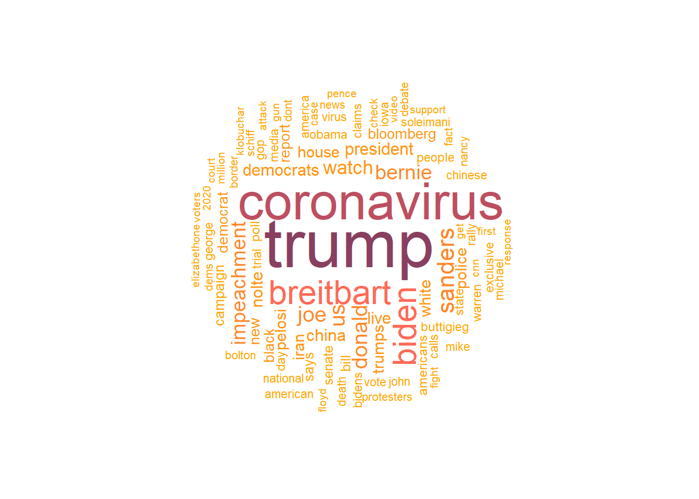

Deciphering News Headlines: Insights from Brazil and the US
Understanding news headlines provides us a way of understanding media landscapes, offering valuable insights into audience preferences and editorial priorities. This analysis focuses on the complexities of news headlines originating from Brazil and the US, two diverse regions with distinct socio-political contexts.
By analyzing the language, themes, and framing employed in these headlines, we can uncover patterns and narratives that shape public discourse and perceptions. Through this exploration, we aim to present the intricate interplay between media, society, and politics in these two influential regions.
Exploring the Dominant Trends in Brazilian News Headlines
In this section, our analysis delves into the largest words utilized by the ‘Folha de Sao Paulo’ newspaper. Through this examination, we aim to uncover themes and topics that dominate the Brazilian media landscape. A notable pattern can be seem, indicating a focus on highlighting key trends that influence public discourse during the analyzed period. This suggests that the newspaper headlines focus primarily to a broad audience, rather than delving into niche topics.
Analyzing English Headlines: US and UK Perspectives
Within this segment, we aim to show the trends in English-language headlines. This analysis presents the primary themes dominating news coverage and also explores the diversity of topics addressed, particularly by alternative newspapers operating outside the mainstream media sphere. By analysis the vocabulary employed by various sources within the same year, we gain valuable insights into the editorial stances adopted by each publication. For instance, while Reuters opts to highlight issues surrounding “disinformation,” Fox News takes a different approach, emphasizing the term “suggesting” at the same year. This contrast underscores the distinct viewpoints and priorities shaping news narratives across different media outlets.
Unveiling Editorial Priorities: Most Utilized Words
This section delves into the analysis of the most frequently used words in headlines across various newspapers. By analyzing the prevalent vocabulary choices, we uncover valuable insights into the overall themes and topics deemed significant by each publication. This examination gave us the opportunity to discern patterns and trends in news coverage.
Brazil: “Folha de Sao Paulo”
Exploring the word cloud generated from the headlines of “Folha de Sao Paulo,” a prominent Brazilian newspaper, we can see the predominant appearance of the word “diz,” meaning “said” in English. This shows a preference for declarative reporting over investigative journalism. This linguistic emphasis suggests a straightforward approach to news delivery, where the focus lies on conveying information rather than delving into deeper investigative narratives.
United States: Reuters
Examining the word cloud generated from headlines sourced from Reuters, a renowned international news agency, reveals a notable emphasis on the term “coronavirus.” This focus aligns with the global concerns during the analyzed period, highlighting Reuters’ commitment to reporting on significant global events. Additionally, the word cloud reflects the agency’s expansive international coverage, as evidenced by the words “China” and “Iran”, indicating a broad editorial perspective that encompasses news from various countries and regions.
United States: ABC News
The word cloud derived from headlines sourced from ABC News illustrates a predominant focus on the term “coronavirus,” reflecting the widespread attention given to the pandemic across various news outlets. However, ABC News, a major American news network, also incorporates a diverse range of topics and events into its coverage. This editorial approach suggests a commitment to providing comprehensive news coverage in the context of the United States territory.
United States: Breitbart News

Breitbart News, an auto-declared right-wing news outlet, demonstrates a distinct editorial stance and coverage emphasis through its word cloud analysis. Notably, the prominence of terms such as “Trump” underscores the publication’s focus on political news and commentary. Additionally, the inclusion of terms like “impechment” and “democrats,” absent in other datasets, hints at Breitbart’s extended engagement with topics related to politics. This emphasis on political discourse and distinct coverage priorities aligns with Breitbart’s reputation as a conservative news source catering to a specific audience demographic.
Sentimental analysis
Sentiment analysis provides valuable insights into the editorial tone and emotional context of news headlines. By examining the sentiment values over time for different news sources, we can discern trends and fluctuations in their reporting.
Reuters
The sentiment analysis for Reuters reveals a predominantly negative sentiment in 2020, with the median sentiment score skewing towards negativity. This aligns with the scenario of negative global events that occurred during that period, indicating Reuters’ commitment to reporting on pressing issues with a measured tone.
ABC News newspaper
In 2020, ABC News demonstrates a notably negative sentiment index, which is unsurprising given the events of that year. However, the sentiment index appears more evenly distributed across headlines in 2019, suggesting a broader range of sentiments expressed and possibly reflecting the evolving narratives covered by the news outlet.
Breitbart News newspaper
Breitbart News exhibits a distinct divide in sentiment, indicating a editorial strategy to cover both negative and positive news. The fluctuation between negative and positive sentiments suggests a nuanced approach to reporting, focusing in a specific audience while maintaining a balanced coverage of diverse topics.
Folha de Sao Paulo, brazilian news paper
Analysis of Folha de Sao Paulo’s headlines unveils an overall negative sentiment, with sporadic instances of positive headlines, notably in 2017. The spike in negative sentiment in 2016 correlates with the impeachment of the country’s president, reflecting the heightened political uncertainty and instability during that period.
Conclusion
This analysis has provided a nuanced exploration of news headlines from Brazilian and US sources, delving into editorial trends, audience preferences, and the broader media landscape.
By analysing both the largest words and the most frequently used terms in headlines, we could identify editorial priorities of various newspapers. “Folha de Sao Paulo” tended to focus on general interest topics, contrasting with US newspapers which covered a more diverse array of subjects, reflecting distinct editorial perspectives.
Furthermore, sentiment analysis gave us insight into how different news outlets responded to global events and tailored their editorial strategies. Reuters leaned towards a predominantly negative sentiment in 2020, mirroring negative global occurrences, while ABC News exhibited a broader spectrum of sentiments, indicative of evolving narratives.
In essence, this analysis underscores the dynamic nature of news headlines and their pivotal role in shaping public discourse. Understanding the editorial focus, stance, and sentiment of different news sources equips audiences with valuable insights into the media landscape, facilitating more informed consumption of news content.